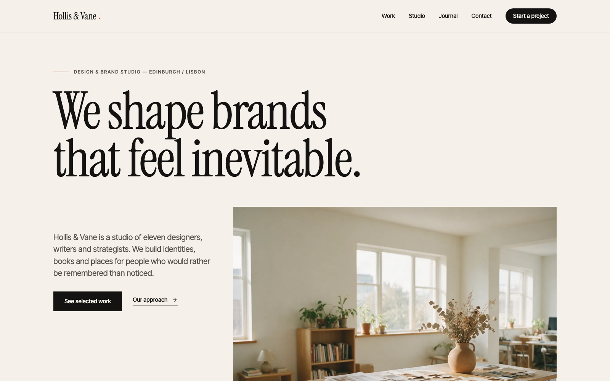

Atelier
Editorial theme for studios and agencies: serif type, paper, ink, terracotta.
- agency
- portfolio
- business
Atelier is a theme for creative studios, agencies and independent practices that want their site to read like a well-made book. It pairs a high-contrast editorial serif (Instrument Serif) with a precise grotesque (Inter Tight), sets everything on warm off-white paper with ink-black type, and reserves a single terracotta accent for the moments that matter: a rule, a numeral, a testimonial band.